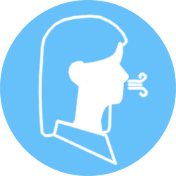

Vous pouvez lâcher les bras ou poser les mains contre votre torse.
Tout en expirant et en poussant sur vos talons, enrouler le bassin pour accentuer la cambrure du dos.
Revenir dans la position initiale en inspirant, le dos bien droit.
Lorsque vous amenez le bassin en arrière, vous devez sentir la cambrure du bas du dos augmenter. La fatigue se fera sentir dans cette zone.
Arrêtez l’exercice quand la fatigue ou l’inconfort se fait sentir.